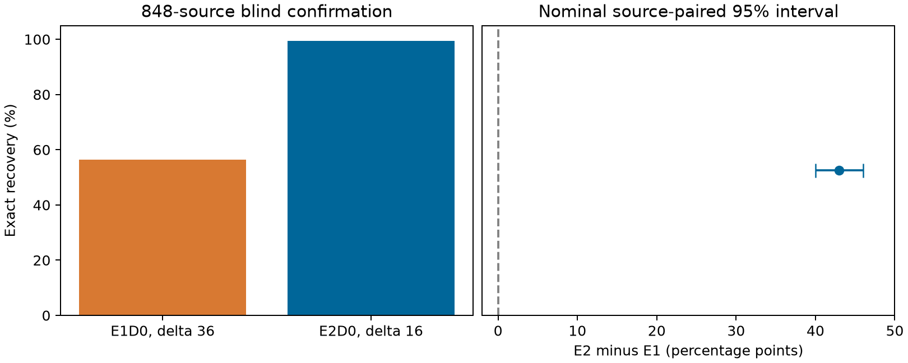

Stable Embedding and Pilot-Guided Recovery of Cropped Block Watermarks
Hyeong-Gyun Yun · Hye-Young Kim (corresponding author)
Research materials being prepared for IEEE Access submission. No acceptance, publication, or DOI is claimed.
Research question
After cropping, correct positional alignment does not ensure that the same coefficient is read. We separate pilot-guided correspondence, coefficient selection stability, and decoder pooling. Learned pooling is a tested alternative, not an assumed improvement.
Distinct experimental panels
- Protocol S, 600 test sources: blind search 56.9167% versus raster 0%; H1/H2 passed, while H3 remained inconclusive.
- Protocol E, 600 test sources: constrained hard decoding recovered 1191/1200 crops. Learned reliability recovered 1184/1200, without an additional advantage. We withhold original formal verdicts because we did not adopt positive practical margins.
- Using quality-only validation on 200 sources, we fixed strengths at 36/16. The insertion-index oracle is a privileged diagnostic on the original panel, not blind recovery or new-source confirmation.
We analyze the following 848-source confirmation separately from those panels rather than pooling their measurements or inferential claims.
Fixed mean-quality confirmation

| Method | Step | Exact /1696 | ER |
|---|---|---|---|
| E1D0 | 36 | 957 | 56.426887% |
| E2D0 | 16 | 1686 | 99.410377% |
848 previously unused sources (424 photographs / 424 generated images). Difference: 42.983491 percentage points; nominal source-paired 95% interval [39.976415, 45.990566]. Mean PSNR/SSIM gaps: 0.127787 dB / 0.000406378.
Same dataset collections, not unseen-generator validation. Mean-quality matching is not perceptual equivalence. No new false-acceptance certification.Reproduce
python tools/verify_release.py checks the uploaded records
without downloading images. The portable CPU runner acquires official
original images, verifies their hashes, and reproduces blind decoding.
We do not redistribute original images. We release source IDs, raw/prepared hashes, message assignments, crop boxes, bits, quality records, analysis, and code in the repository. We have not selected a public reuse license for our original contributions.
Release verification
Using the full public CPU wrapper, we reproduced all 3392 blind decodes and 1696 quality measurements from 848 sources, including predicted bits, phases, crop boxes, coverage, and marked-image hashes. Fourteen regression and release-interface tests passed, including after downloading a fresh clone from GitHub. This confirms the recorded reproduction, not new robustness or false-acceptance claims.
Automated record verification · Full CPU reproduction record · Wrapper validation environment